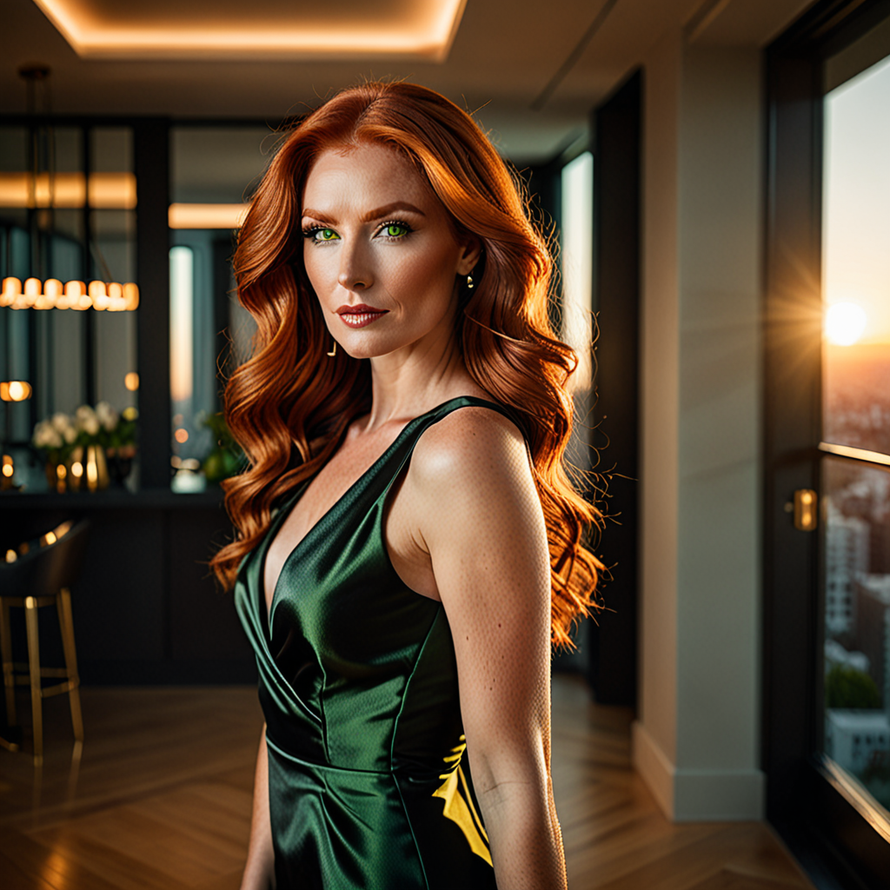
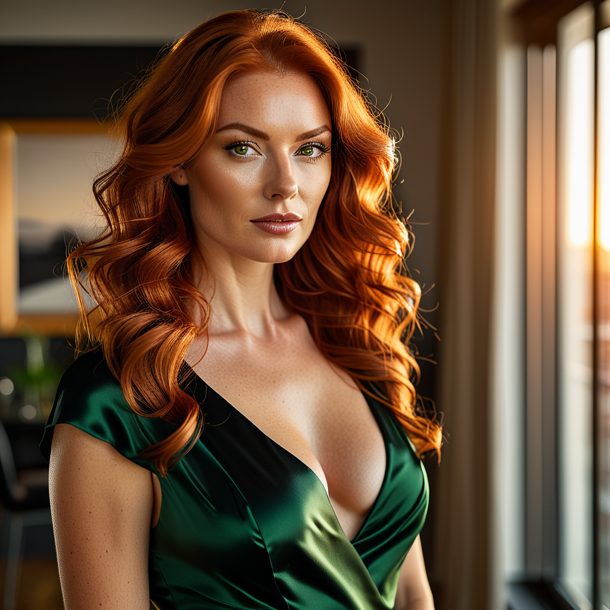
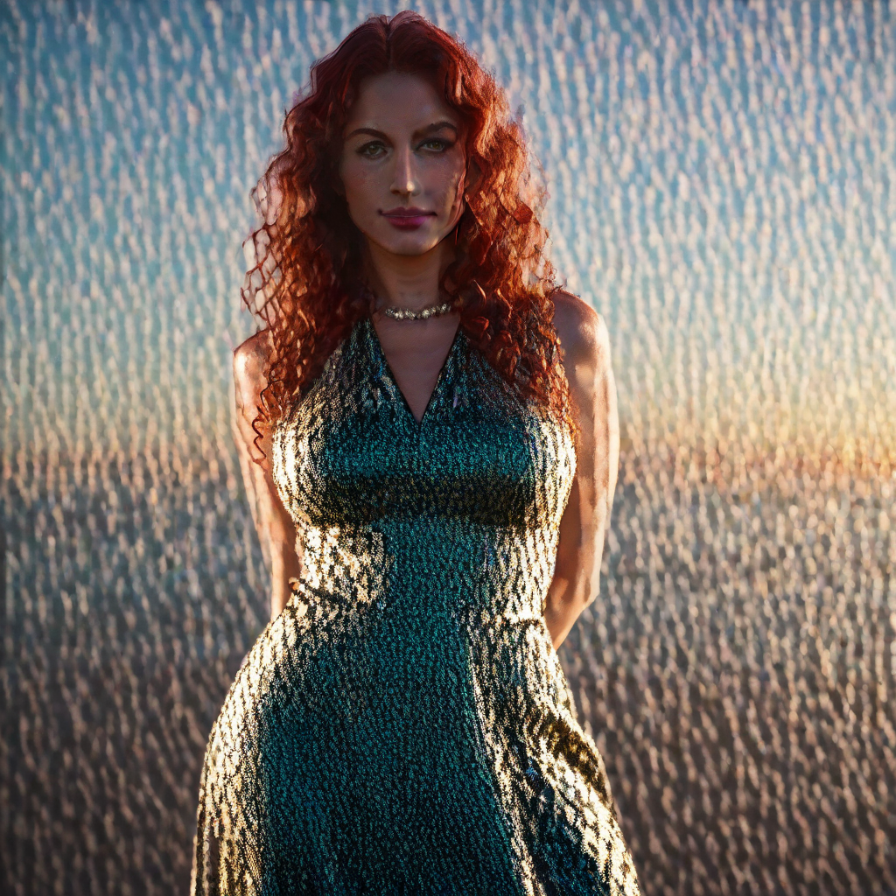
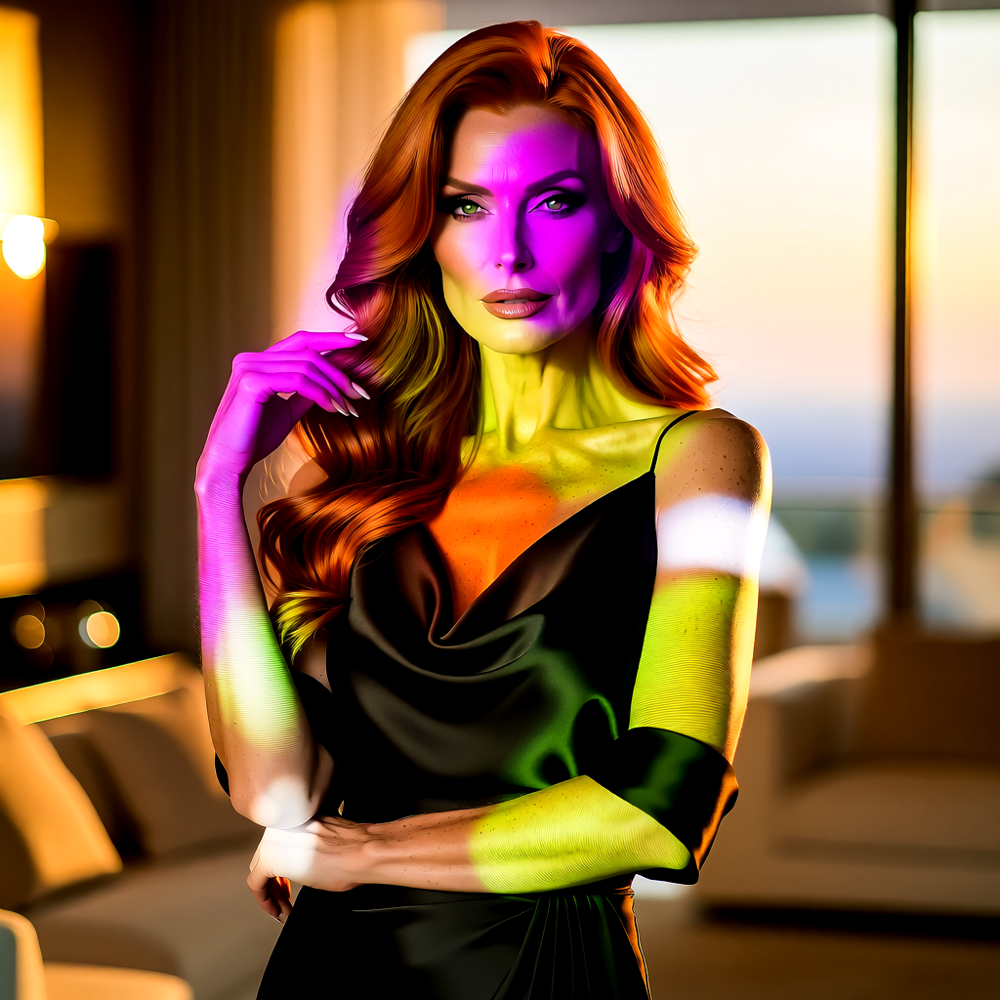
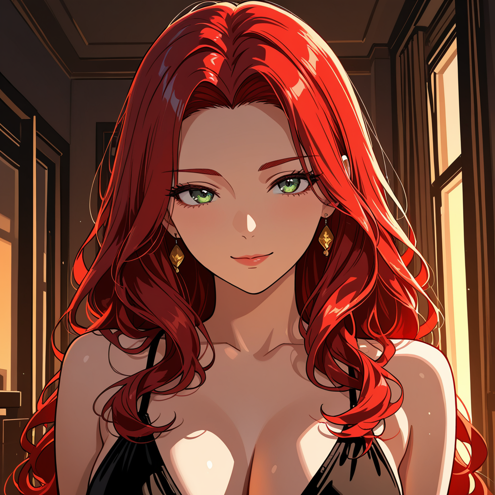
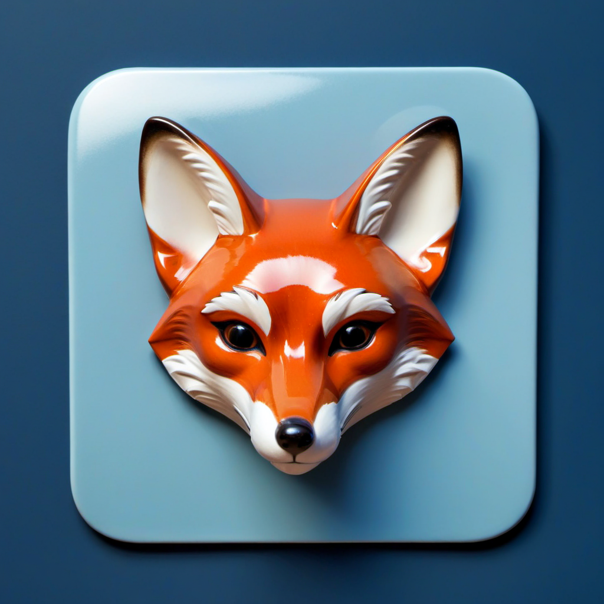
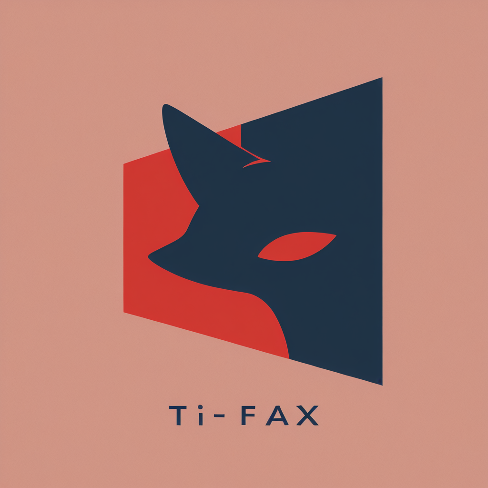

IA local não é grátis. A máquina, a energia, o armazenamento e o seu tempo continuam na conta. O que desaparece é outra coisa: a cobrança por imagem, o pacote de créditos e o prompt saindo do computador.
Para descobrir se essa troca compensa, rodei 133 imagens em 11 modelos e pipelines, cobrindo sete perfis de uso na mesma máquina. Não encontrei um campeão universal. Encontrei algo mais útil: um mapa de decisão para saber qual modelo usar para explorar, fotografar, desenhar, recortar e finalizar.
Minha conclusão curta: o Pony GGUF venceu no relógio, mas não nos resultados finais. Para fotografia, DreamShaper, Juggernaut e EpicRealism entregaram imagens mais utilizáveis; para anime, os checkpoints Illustrious foram muito mais coerentes. O melhor fluxo combina velocidade para explorar com especialização para finalizar.
“Sem pagar por geração” é o termo correto
Na API, o custo é visível: tantas imagens, tantos créditos. Localmente, ele se espalha entre GPU, energia, armazenamento e manutenção. A recompensa vem depois da instalação: testar cem variações deixa de significar acompanhar um contador diminuindo a cada tentativa.
Por isso eu separo três afirmações que parecem iguais, mas não são:
- Sem cobrança por geração: verdadeiro neste teste. Nenhuma API foi chamada para produzir as imagens.
- Sem assinatura ou créditos: verdadeiro para os modelos e ferramentas locais usados.
- Custo zero: falso. Hardware, energia, armazenamento, download e tempo continuam na conta.
A conta honesta é custo local = energia + amortização do hardware + operação. A troca vale quando privacidade, volume, liberdade de experimentar ou previsibilidade pesam mais que a conveniência de uma API.
O laboratório do teste
A bateria foi executada em Windows com RTX 5060 Ti de 16 GB de VRAM, 96 GB de RAM e ComfyUI 0.34.0. Stability Matrix cuidou da instalação; ComfyUI executou os workflows; SwarmUI ficou como opção de interface mais simples para checkpoints de imagem. Rodei um backend por vez para não criar disputa artificial por VRAM.
Os modelos de imagem ocupam, em geral, vários gigabytes. Na instalação usada no teste, os checkpoints foram centralizados em uma biblioteca compartilhada e expostos aos aplicativos por links do sistema. Isso evita o erro mais caro de uma estação local: guardar a mesma coleção de modelos duas ou três vezes.
Limite importante: estes números pertencem a esta máquina, a estas versões e a estes workflows. Trocar GPU, sampler, passos, resolução, quantização, versão do PyTorch ou estado do cache muda o tempo. O benchmark é uma referência operacional, não uma promessa universal.
Como eu mantive a comparação útil
O teste principal congelou a seed 20260913, separou os prompts por finalidade e registrou modelo, workflow, duração, resolução e arquivo de saída. Também usei perfis diferentes para fotografia, anime, imagem de referência, personagem em quatro poses e ícones com ou sem fundo.
Usar o mesmo prompt, sozinho, não torna um benchmark justo. Um checkpoint fotográfico e outro treinado para anime podem obedecer às mesmas palavras e perseguir objetivos incompatíveis. A pergunta útil não é “qual ficou mais bonito?”, mas “qual resolveu melhor a tarefa para a qual eu o escolheria?”.
Ver o prompt fotográfico exato
Photorealistic editorial photograph of an attractive adult red-haired woman with long wavy copper hair, green eyes, elegant features, and a confident, sensual presence. She wears a stylish black silk dress, standing in a luxurious modern apartment at sunset. Warm golden lighting, confident eye contact with the camera, graceful body language, sophisticated and tasteful mood, realistic skin texture, high-end fashion editorial style, shallow depth of field, 85mm lens, no nudity, no explicit content.
Ver o negative prompt
worst quality, low quality, blurry, jpeg artifacts, watermark, text, bad anatomy, deformed, extra limbs, duplicate subject, cropped, distorted hands, child, minor, nsfw, nude, nudity
O prompt segue uma estrutura reproduzível: sujeito, contexto, composição e lente, luz, estilo e restrições. Quando eu mudei fotografia para manga, mantive personagem, ambiente e luz, trocando apenas a linguagem visual. Isso reduz a chance de comparar duas cenas diferentes e atribuir a diferença ao modelo.
Os tempos medidos
| Modelo | Execuções | Mínimo | Máximo | Média |
|---|---|---|---|---|
pony_gguf | 13 | 20,1 s | 32,2 s | 24,9 s |
dreamshaper_xl_lightning | 13 | 19,3 s | 3min01s | 2min14s |
juggernaut_xl_lightning | 13 | 20,2 s | 3min01s | 2min14s |
nova_reality_illustrious | 13 | 19,5 s | 3min01s | 2min14s |
plant_milk_illustrious | 13 | 19,7 s | 3min01s | 2min14s |
wai_illustrious_v170 | 13 | 18,6 s | 3min01s | 2min14s |
perfect_deliberate_illustrious | 13 | 19,3 s | 3min01s | 2min14s |
hardcore_asian_illustrious | 13 | 21,3 s | 3min01s | 2min15s |
epicrealism_xl | 13 | 19,7 s | 3min01s | 2min14s |
cyberrealistic_sd15 | 13 | 22,3 s | 3min00s | 2min15s |
lustify_krea2 | 3 | 2min40s | 2min45s | 2min44s |
A média mistura geração e pós-processamento; ela serve para planejar o trabalho, não para declarar uma arquitetura vencedora. No perfil fotográfico, o recorte mais claro, o Pony terminou em 25,1 segundos e os checkpoints principais ficaram perto de 2min40s. Mais de seis vezes de diferença. As imagens abaixo mostram o preço visual dessa velocidade.




O que as imagens mostram além do cronômetro
Fotografia: especialização ainda vence velocidade
DreamShaper, Juggernaut e EpicRealism foram os resultados mais aproveitáveis em retrato e editorial. Nenhum obedeceu a cada palavra: o vestido preto recebeu reflexos verdes em algumas saídas, enquanto pose e enquadramento mudaram. Ainda assim, pele, cabelo, luz e profundidade de campo ficaram coerentes o bastante para justificar uma segunda rodada.
O Pony GGUF funciona muito bem como rascunho operacional: responde rápido o suficiente para testar composição e direção geral. Neste perfil, porém, a velocidade trouxe ruído, cenário simplificado e menor aderência. Promovê-lo a resultado final só porque ganhou no relógio seria otimizar a métrica errada.
Anime: o checkpoint muda mais que o prompt

Nos modelos Illustrious, a personagem ganhou olhos maiores, contorno mais controlado e cel shading mais previsível. WAI e Hardcore Asian responderam melhor à intenção de manga do que os checkpoints fotográficos. Isso confirma a regra mais útil de toda a bateria: escolha o checkpoint pelo domínio antes de tentar corrigir tudo com um prompt maior.
Ícones: obedecer “sem texto” ainda é uma loteria


A bateria de ícones adicionou 40 imagens, entre versões normais e 3D, com fundo e com transparência. O recorte transparente veio do rembg aplicado à mesma imagem, não de uma segunda geração. Por isso, os 18 a 27 segundos dessas versões medem pós-processamento, não velocidade do checkpoint.
Qual modelo eu escolheria
| Objetivo | Primeira escolha | Estratégia |
|---|---|---|
| Explorar ideias depressa | pony_gguf | Gerar muitas composições e promover só as melhores para outro modelo. |
| Retrato realista | DreamShaper, Juggernaut ou EpicRealism | Comparar duas seeds antes de aumentar resolução. |
| Anime/manga | WAI ou outro Illustrious especializado | Usar vocabulário visual do domínio, não apenas “anime style”. |
| Ícone 3D | EpicRealism neste conjunto | Validar silhueta pequena, texto acidental e fundo antes do recorte. |
| Imagem de referência | Checkpoint compatível com img2img | Fixar denoise e avaliar identidade separadamente de beleza. |
Se eu começasse hoje, usaria este fluxo
- Comece por uma interface. SwarmUI é mais amigável para checkpoints; ComfyUI é melhor quando o workflow precisa de controle e nós especializados.
- Centralize os modelos. Use uma pasta canônica e links/junctions para os aplicativos. Não duplique dezenas de gigabytes.
- Rode um backend por vez. Duas interfaces disputando VRAM transformam qualquer benchmark em ruído.
- Crie um prompt-base. Separe sujeito, ação, ambiente, composição, luz, estilo e restrições.
- Fixe seed e parâmetros. Registre resolução, passos, sampler, CFG, denoise e versão do workflow.
- Compare por finalidade. Fotografia com fotografia; anime com anime; img2img com img2img.
- Faça triagem em resolução menor. Só aumente custo depois de aprovar composição e direção visual.
- Guarde metadados junto da saída. Uma imagem bonita sem prompt, seed e modelo é difícil de reproduzir.
Os erros que mais desperdiçam tempo
- Baixar checkpoints de divulgação sem conferir licença e compatibilidade.
- Comparar modelos com seeds, resoluções ou denoise diferentes.
- Chamar pós-processamento de “geração mais rápida”.
- Confiar em uma única imagem e declarar um vencedor universal.
- Tentar consertar um checkpoint inadequado com um prompt gigantesco.
- Medir apenas beleza e ignorar aderência, anatomia, texto acidental e consistência.
- Assumir que “roda local” significa “uso comercial liberado”. Licença do modelo continua valendo.
O que este benchmark ainda não prova
Uma seed por perfil não mede estabilidade estatística. A próxima rodada correta precisa de pelo menos quatro seeds, mesma resolução, mesmos parâmetros e uma rubrica fixa: aderência ao prompt, anatomia, identidade, composição, artefatos e utilidade final. Também precisa separar tempo de carregamento, geração e pós-processamento.
Os resultados sustentam decisões operacionais, como quais modelos merecem nova rodada e quanto tempo reservar, mas não um ranking científico de qualidade. O limite faz parte do resultado: saber o que o dado não prova evita transformar impressão em certeza.
Vale a pena?
Vale para quem gera em volume, trabalha com material sensível, quer testar sem vigiar créditos ou precisa controlar o pipeline inteiro. Para poucas imagens ocasionais, uma API ainda pode ser a troca mais sensata: você paga pela conveniência e não pela infraestrutura.
Na minha máquina, a regra ficou simples: modelo rápido para buscar a ideia, modelo especializado para fechar a imagem, parâmetros congelados para comparar e biblioteca compartilhada para não desperdiçar disco. IA local não elimina custo. Ela troca cobrança variável e dependência externa por capacidade própria.
O próximo degrau é bem mais pesado: vídeo local. Nele, a unidade deixa de ser segundos por imagem e passa a ser minutos, às vezes horas, por cinco segundos de clipe. Veja o teste completo de vídeo com IA local em 16 GB.